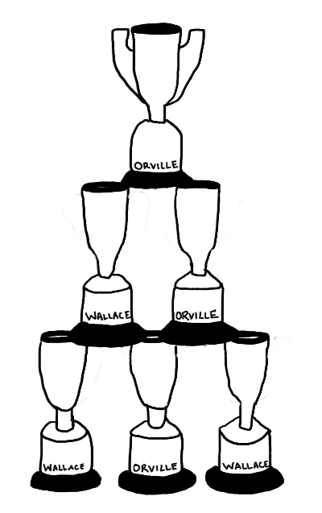
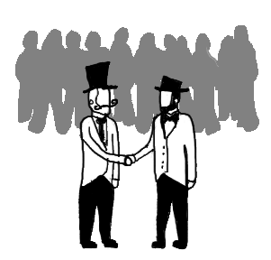
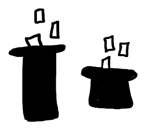
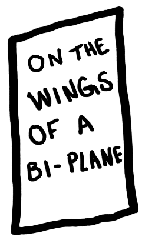

The Ultimate Game
Wallace and Orville's childhood rivalry had only accelerated as they grew older. 
Now grown men, they still sought to best each other in all feats athletic and adventurous, and their public competition had earned them a level of celebrity previously unseen before.
One night at a party the men met in view of the people around to settle where and when and how their contest would be decided
They took two top hats and filled them with cards; one with the death defying location for where they would battle,
 and the other written with the challenge of sportsmanship that would prove who was the greatest of all. Wallace drew first from the second hat
and read the card, "solo tennis".
Orville drew the final deciding card from the first hat, as he pulled the card into the light the audience around gasped aloud shocked to read the words:
